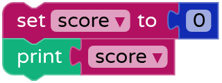

Variables
Store and display the player’s score.
Blockly

GDScript
var score = 0
print(score)In Blockly, the set block gives the variable a value. In GDScript, var creates the variable and = assigns its starting value. To read it, type its name.
Try it
Edit and run the example above, or follow the setup instructions to try it in Godot on your computer.
Change the starting score to 5. Add score += 1 before print(score) to simulate collecting a coin. Predict the output, then run the scene.
Check your result
The Output panel should show 6. The += operator adds to the current value and stores the result.